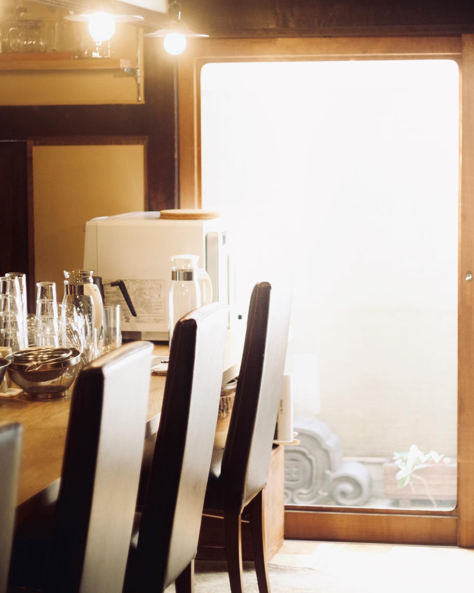

ABOUT
喫茶けけけについて
喫茶けけけは、写真好きの3人が、それぞれの「好き」を持ち寄って開く期間限定の喫茶店です。

成り立ち
始まりは、店主・川上諒馬の一声でした。珈琲が好きで、写真が好きで、その両方を楽しめる場所を自分たちで作ってみたい。そんな声かけに、フード担当の飯野雅空と、お菓子担当の矢野杏香が集まり、喫茶けけけは生まれました。
名前の「けけけ」は、3人の笑い声のような、少しふざけた響きから。全員が写真を撮ることもあり、店内ではカメラの話が尽きません。メニューは回ごとに話し合って決め、試作を重ねてからお出ししています。台湾まで調査に行って作った滷肉飯、映画を観てから食べに来てほしいキューバサンドなど、一品ごとに小さな物語があります。
常設の店ではないからこそ、一回ごとに全力で。次回はどこで、いつ開くのか。決まったらまずInstagramでお知らせします。
これまでの営業
- 2022年12月
- 第1回営業 — 喫茶けけけの初めての開催。手探りながら、たくさんの方に来ていただきました。第1回営業の御礼（記録）
- 2023年9月
- 第2回営業 — 9月20日・21日・22日の3日間、京都市中京区、京都市役所の裏手付近で開催。キューバサンドは続投し、滷肉飯などが新たに加わりました。第2回営業の御礼（記録）
- 次回
- 準備中 — 日時・場所は未定です。開催情報ページとInstagramでお知らせします。
メンバーに会いに来てください
珈琲、フード、お菓子。3人の担当と人となりはメンバー紹介で。